library(tidyverse)
library(ggplot2)
library(dplyr)
library(gsheet)
library(lme4)
library(cowplot)
library(readxl)
library(writexl)
library(ggdist)Packages
Importation
gls = gsheet2tbl("https://docs.google.com/spreadsheets/d/1TC_-I7OpUloaqh5sd3mVu8YW-V1Lxk8SZ_DRCIUmWOE/edit?usp=sharing")Descriptive analysis
Severity
plot_sev = gls %>%
ggplot(aes(sev))+
geom_histogram(color = "white", fill = "black")+
#stat_function(fun=function(x) dbeta(x, 0.94145, 6.45601), color= "darkred", size = 1.2)+
ggthemes::theme_few()+
labs(x = "Disease severity (%)",
y = "Frequency")+
theme(text = element_text(size = 10, face = "bold"),
axis.title = element_text(size = 10, face = "bold"))Yield
yy = gls %>%
filter(!yld <= 1500)
mean(gls$yld)[1] 8965.05max(gls$yld)[1] 13073.42min(yy$yld)[1] 3382.11quantile(yy$yld) 0% 25% 50% 75% 100%
3382.110 8018.915 8971.835 9844.248 13073.420 mean_intercept = mean(gls$yld)
sd_intercept = sd(gls$yld)
plot_yld = gls %>%
filter(!yld <=1000) %>%
ggplot(aes(yld))+
geom_histogram(fill = "black", color = "white", bins = 20) + # Ajusta para densidade
scale_x_continuous(breaks = c(4000, 6000,8000,10000,12000, 14000), limits = c(4000, 14000))+
ggthemes::theme_few()+
labs(x = "Yield (kg/ha)",
y = "")+
theme(text = element_text(size = 10, face = "bold"),
axis.title = element_text(size = 10, face = "bold"))
plot_yld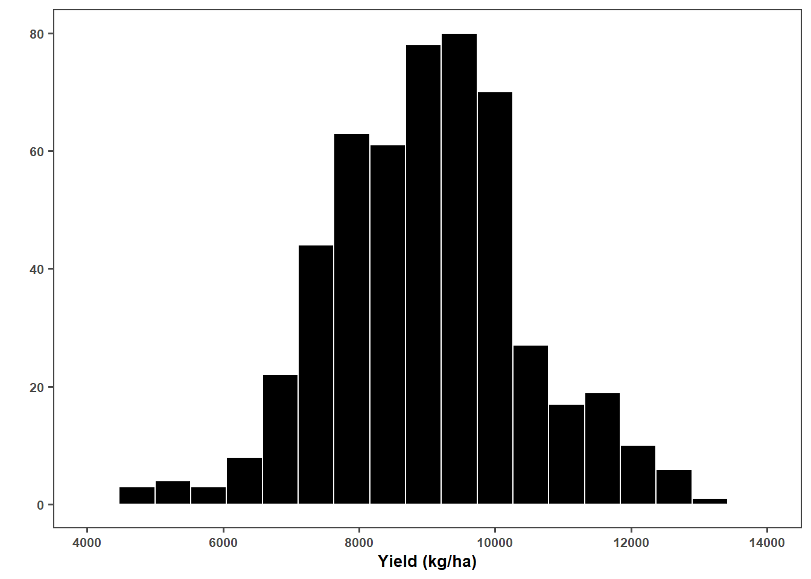
plot_grid(plot_sev, plot_yld, ncol = 2, label_x = -0.03, label_size = 14,
labels = c("(a)","(b)"))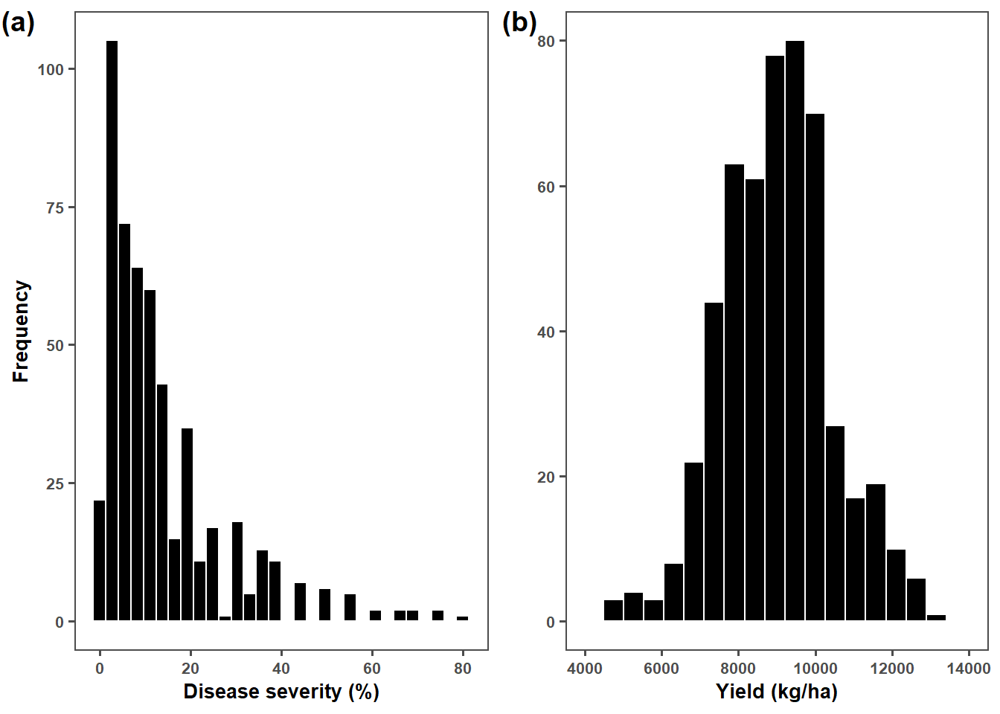
ggsave("fig/sev_yld.png", bg = "white", dpi = 600,
width = 8, height = 4)Prepare data
estria2 <- gls |>
group_by(trial, hybrid) |>
summarise(mean_sev = mean(sev),
mean_yld = mean(yld))
max(estria2$mean_sev)[1] 76.66667min(estria2$mean_sev)[1] 1.333333mean(estria2$mean_sev)[1] 13.83716median(estria2$mean_sev)[1] 9.5sd(estria2$mean_sev)[1] 13.12138max(estria2$mean_yld)[1] 12503.86min(estria2$mean_yld)[1] 3909.777mean(estria2$mean_yld)[1] 8964.191median(estria2$mean_yld)[1] 8989.737sd(estria2$mean_yld)[1] 1359.003Visualize
estria2 = estria2 %>%
mutate(
period = case_when(trial == "2018_1"~ "2018/1",
trial == "2018_2" ~"2018/2",
trial == "2018_19"~"2018/2019",
trial == "2019_1" ~"2019/1"))
library(ggthemes)
trials = estria2 |>
ggplot(aes(mean_sev, mean_yld, group = as.factor(period),color = as.factor(period)))+ #
geom_point()+
#facet_wrap(~period)+
geom_smooth(method = "lm", se = FALSE, size = 2)+
scale_color_viridis_d()+
theme_minimal()+
scale_y_continuous(breaks = c(4000, 5000,6000,7000,8000,9000,10000,11000,12000),
limits = c(4000, 12000))+
theme_few()+
labs(x = "Disease severity (%)",
y = "Yield (kg/ha)",
color = "Seasons")+
theme(text = element_text(size = 12, face = "bold"),
legend.position = "none")
#geom_abline(slope = -49.3, intercept = 9714, linetype = 1, linewidth =2, color = "gray50")
ggsave("fig/trials.png", bg = "white", dpi = 600,
width = 6, height = 4)library(broom)
lmer_stats = estria2 %>%
#group_by(year) %>%
dplyr::select(trial, mean_yld,mean_sev) %>%
group_by(trial) %>%
do({
model <- lm(.$mean_yld ~ .$mean_sev)
tidy_model <- tidy(model)
confint_model <- confint(model) # Calcula os intervalos de confiança
bind_cols(tidy_model, confint_model)
})
lmer_stats = lmer_stats |>
filter(term %in% c("(Intercept)",".$mean_sev"))
lmer_stats[lmer_stats$term== "(Intercept)",c("parameters")] <- "Intercept"
lmer_stats[lmer_stats$term== ".$mean_sev",c("parameters")] <- "Slope"
i <- 1
while (i <= nrow(lmer_stats)) {
if (lmer_stats$parameters[i] == "Slope" && lmer_stats$estimate[i] > 0) {
# Remove a linha do Slope e a linha do Intercept correspondente
lmer_stats <- lmer_stats[-c(i, i - 1), ]
# Atualiza o índice, pois duas linhas foram removidas
i <- i - 2
}
i <- i + 1
}
lmer_statsslope_trial_m= lmer_stats |>
filter(parameters == "Slope") %>%
summarise(
Slope = estimate
)
slope_trial_m[,1] = NULL
slope_trial_m |>
filter(!Slope == "NA") |>
summarise(
mean = mean(Slope))intercept_trial_m = lmer_stats |>
filter(parameters == "Intercept") %>%
summarise(
Intercept = estimate
)
intercept_trial_m[,1] = NULL
mean(intercept_trial_m$Intercept)[1] 9711.667regression_trial_m = cbind(slope_trial_m,intercept_trial_m)
regression_trial_m[,3] = NULL
summary_stats <- regression_trial_m %>%
reframe(
mean_intercept = mean(Intercept),
mean_slope = mean(Slope),
ci_intercept_lower = quantile(Intercept, 0.025),
ci_intercept_upper = quantile(Intercept, 0.975),
ci_slope_lower = quantile(Slope, 0.025),
ci_slope_upper = quantile(Slope, 0.975)
)
trials = estria2|>
ggplot(aes(mean_sev, y = mean_yld)) +
geom_point(color = "NA")+
scale_y_continuous(breaks = c(4000,6000,8000,10000,12000),
limits = c(4000, 12000))+
geom_abline(data =regression_trial_m, aes(slope = Slope, intercept = Intercept), size = 1,
alpha = 0.5, color = "grey")+##9ccb86
#geom_abline(data =summary_stats, aes(slope = mean_slope, intercept = mean_intercept),
# size = 1.5, fill = "black", color = "black")+
geom_abline(data = summary_stats,aes(intercept = ci_intercept_lower,slope = ci_slope_lower) ,
size = 1.5, linetype = 2, fill = "grey", color = "grey")+
geom_abline(data = summary_stats, aes(intercept = ci_intercept_upper,slope = ci_slope_upper), size = 1.5, linetype = 2, fill = "grey", color = "grey")+
geom_abline(aes(slope = -49.37, intercept = 9714.0),
size = 1.5, fill = "black", color = "black")+
geom_abline(aes(intercept = 8699.1,slope = -60.59) ,
size = .51, linetype = 2)+
geom_abline(aes(intercept = 10733.8,slope = -38.00), size = .51, linetype = 2)+
ggthemes::theme_few()+
theme(text = element_text(size = 10, face = "bold"),
axis.title = element_text(size = 10, face = "bold"),
legend.position = "none")+
labs(x = "Disease severity (%)", y = "Attainable yield (kg/ha)",
title = "")first_plot = estria2 |>
filter(trial == "2018_1") %>%
ggplot(aes(mean_sev, mean_yld))+ #, group = trial, color = trial
geom_point()+
facet_wrap(~trial)+
geom_smooth(method = "lm", se = FALSE, size = 2, color = "black")+
scale_x_continuous(breaks = c(0, 20, 40,60,80), limits = c(0, 80))+
scale_y_continuous(breaks = c(5000, 7500, 10000,12500), limits = c(5000, 12500))+
scale_color_viridis_d()+
theme_minimal()+
theme_few()+
labs(x = "Severity (%)",
y = "Yield (kg/ha)",
color = "Trial")+
theme(text = element_text(size = 12, face = "bold"))
second_plot = estria2 |>
filter(trial == "2018_2") %>%
ggplot(aes(mean_sev, mean_yld))+ #, group = trial, color = trial
geom_point()+
facet_wrap(~trial)+
geom_smooth(method = "lm", se = FALSE, size = 2, color = "black")+
scale_x_continuous(breaks = c(0, 20, 40,60,80), limits = c(0, 80))+
scale_y_continuous(breaks = c(5000, 7500, 10000,12500), limits = c(5000, 12500))+
scale_color_viridis_d()+
theme_minimal()+
theme_few()+
labs(x = "Severity (%)",
y = "Yield (kg/ha)",
color = "Trial")+
theme(text = element_text(size = 12, face = "bold"))
third_plot = estria2 |>
filter(trial == "2018_19") %>%
ggplot(aes(mean_sev, mean_yld))+ #, group = trial, color = trial
geom_point()+
facet_wrap(~trial)+
geom_smooth(method = "lm", se = FALSE, size = 2, color = "black")+
scale_x_continuous(breaks = c(0, 20, 40,60,80), limits = c(0, 80))+
scale_y_continuous(breaks = c(5000, 7500, 10000,12500), limits = c(5000, 12500))+
scale_color_viridis_d()+
theme_minimal()+
theme_few()+
labs(x = "Severity (%)",
y = "Yield (kg/ha)",
color = "Trial")+
theme(text = element_text(size = 12, face = "bold"))
fourth_plot = estria2 |>
filter(trial == "2019_1") %>%
ggplot(aes(mean_sev, mean_yld))+ #, group = trial, color = trial
geom_point()+
facet_wrap(~trial)+
geom_smooth(method = "lm", se = FALSE, size = 2, color = "black")+
scale_x_continuous(breaks = c(0, 20, 40,60,80), limits = c(0, 80))+
scale_y_continuous(breaks = c(5000, 7500, 10000,12500), limits = c(5000, 12500))+
scale_color_viridis_d()+
theme_minimal()+
theme_few()+
labs(x = "Severity (%)",
y = "Yield (kg/ha)",
color = "Trial")+
theme(text = element_text(size = 12, face = "bold"))
library(patchwork)
combined_plot <- (first_plot | plot_yld | second_plot) /
(third_plot | plot_sev | fourth_plot) +
plot_layout(widths = c(2, 10, 2), heights = c(1, 1))
combined_plot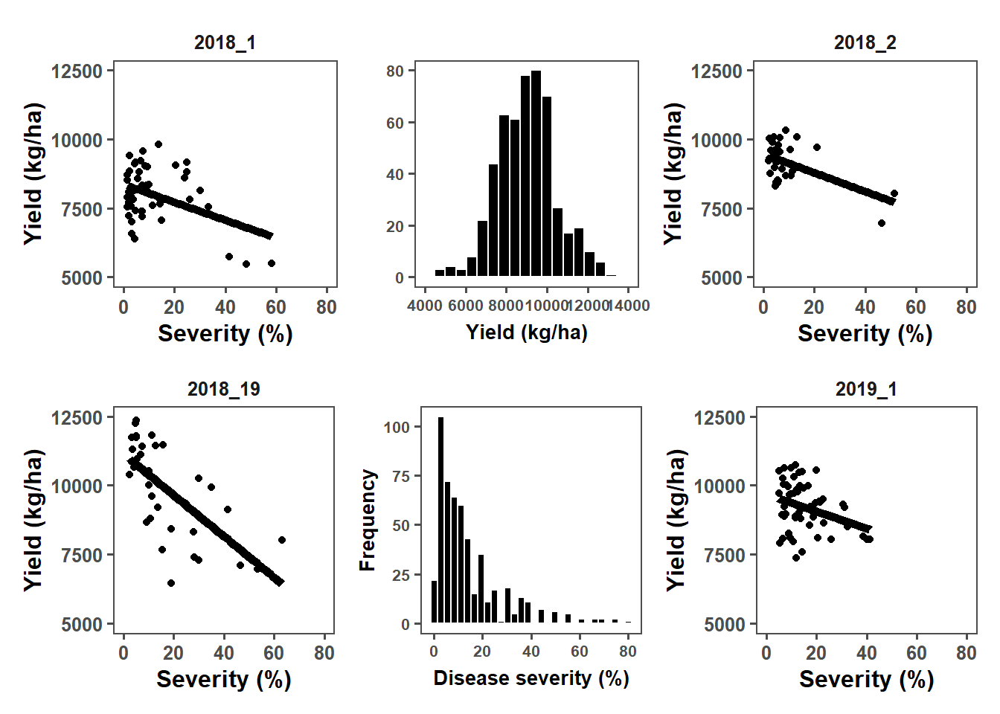
ggsave("fig/plot_all.png", bg = "white", width = 10, height = 8)Modeling
Fitting
library(lme4)
# Fit a mixed-effects model
obs_model_lmer <- lmer(mean_yld ~ mean_sev + (1 | trial), data = estria2)
# Summary of the model
summary(obs_model_lmer)Linear mixed model fit by REML ['lmerMod']
Formula: mean_yld ~ mean_sev + (1 | trial)
Data: estria2
REML criterion at convergence: 2880.3
Scaled residuals:
Min 1Q Median 3Q Max
-3.4362 -0.7056 0.0671 0.7105 2.0247
Random effects:
Groups Name Variance Std.Dev.
trial (Intercept) 820678 905.9
Residual 941736 970.4
Number of obs: 174, groups: trial, 4
Fixed effects:
Estimate Std. Error t value
(Intercept) 9714.049 465.870 20.851
mean_sev -49.378 5.745 -8.595
Correlation of Fixed Effects:
(Intr)
mean_sev -0.168confint(obs_model_lmer) 2.5 % 97.5 %
.sig01 426.84166 1944.19893
.sigma 873.17446 1080.29427
(Intercept) 8699.18638 10733.83869
mean_sev -60.59337 -38.00271set.seed(1234)
# Parameters from the fitted model
fixed_intercept <- 9714.049
fixed_slope <- -49.378
random_effect_sd <- 905.9 # sqrt(820678)
residual_sd <- 970.4 # sqrt(941736)
# Number of experiments and points per experiment
num_experiments <- 200 # New experiments
points_per_experiment <- 50
# Simulate data
# Get the range of observed severity values from the original dataset
set.seed(123)
# Simulate data with variable max severity for each experiment
simulated_data_lmer <- data.frame()
for (exp in 1:num_experiments) {
# Simulate random intercept for the experiment
u_j <- rnorm(1, mean = 0, sd = random_effect_sd)
# Randomly select a max severity for this simulation between 50% and 80%
max_sev_sim <- runif(1, min = 20, max = 80)
# Simulate severity values (independent variable) within the 0 to max_sev_sim range
sev <- runif(points_per_experiment, min = 0, max = max_sev_sim)
# Simulate residuals
residuals <- rnorm(points_per_experiment, mean = 0, sd = residual_sd)
# Generate yield (dependent variable)
yld <- fixed_intercept + u_j + fixed_slope * sev + residuals
# Combine into a data frame
exp_data <- data.frame(experiment = paste0("Exp_", exp), sev = sev, yld = yld)
simulated_data_lmer <- rbind(simulated_data_lmer, exp_data)
}
simulated_data_lmer$hybrid <- paste0("hybrid_", sprintf("%02d", (seq_len(nrow(simulated_data_lmer)) - 1) %/% 50 + 1))
# View simulated data
head(simulated_data_lmer)summary(simulated_data_lmer) experiment sev yld hybrid
Length:10000 Min. : 0.00051 Min. : 2528 Length:10000
Class :character 1st Qu.:10.61846 1st Qu.: 7391 Class :character
Mode :character Median :21.04083 Median : 8509 Mode :character
Mean :24.67849 Mean : 8472
3rd Qu.:36.17231 3rd Qu.: 9594
Max. :78.27768 Max. :14239 library(ggplot2)
# Compare simulated and real severity-yield relationships
ggplot(simulated_data_lmer, aes(x = sev, y = yld, color = experiment)) +
geom_point(alpha = 0.5) +
geom_smooth(method = "lm", se = FALSE) +
theme_minimal() +
theme(legend.position = "none")+
labs(title = "Simulated Severity-Yield Data", x = "Severity", y = "Yield")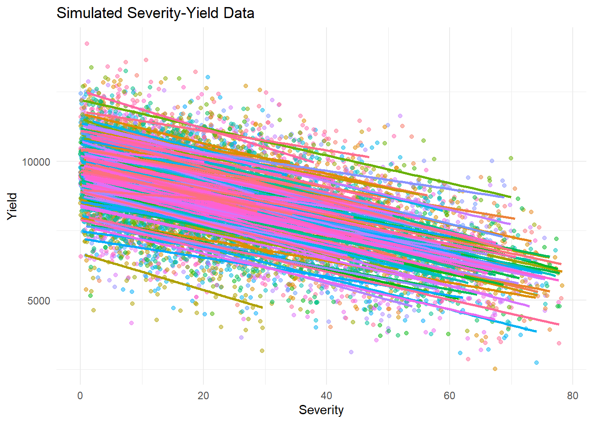
simu_model_lmer <- lmer(yld ~ sev + (1 | experiment), data = simulated_data_lmer)
simu_model_lmerLinear mixed model fit by REML ['lmerMod']
Formula: yld ~ sev + (1 | experiment)
Data: simulated_data_lmer
REML criterion at convergence: 166620.8
Random effects:
Groups Name Std.Dev.
experiment (Intercept) 937.3
Residual 966.9
Number of obs: 10000, groups: experiment, 200
Fixed Effects:
(Intercept) sev
9691.01 -49.39 summary(simu_model_lmer)Linear mixed model fit by REML ['lmerMod']
Formula: yld ~ sev + (1 | experiment)
Data: simulated_data_lmer
REML criterion at convergence: 166620.8
Scaled residuals:
Min 1Q Median 3Q Max
-3.6504 -0.6689 0.0041 0.6771 3.3524
Random effects:
Groups Name Variance Std.Dev.
experiment (Intercept) 878546 937.3
Residual 934819 966.9
Number of obs: 10000, groups: experiment, 200
Fixed effects:
Estimate Std. Error t value
(Intercept) 9691.0145 68.8438 140.77
sev -49.3879 0.6449 -76.59
Correlation of Fixed Effects:
(Intr)
sev -0.231confint(simu_model_lmer) 2.5 % 97.5 %
.sig01 848.3483 1036.5979
.sigma 953.4327 980.5062
(Intercept) 9555.8113 9826.1935
sev -50.6520 -48.1241obs_fixed_effects_lmer <- fixef(obs_model_lmer) # From the original model
simu_fixed_effects_lmer <- fixef(simu_model_lmer) # From the simulated model
print(obs_fixed_effects_lmer)(Intercept) mean_sev
9714.04857 -49.37773 print(simu_fixed_effects_lmer)(Intercept) sev
9691.01451 -49.38785 obs_random_effects_lmer <- VarCorr(obs_model_lmer)
simu_random_effects_lmer <- VarCorr(simu_model_lmer)
print(obs_random_effects_lmer) Groups Name Std.Dev.
trial (Intercept) 905.91
Residual 970.43 print(simu_random_effects_lmer) Groups Name Std.Dev.
experiment (Intercept) 937.31
Residual 966.86 obs_residual_sd_lmer <- attr(VarCorr(obs_model_lmer), "sc")
simu_residual_sd_lmer <- attr(VarCorr(simu_model_lmer), "sc")
print(obs_residual_sd_lmer)[1] 970.4308print(simu_residual_sd_lmer)[1] 966.8604Plotting
library(broom)
lmer_stats = simulated_data_lmer %>%
#group_by(year) %>%
dplyr::select(experiment, yld,sev) %>%
group_by(experiment) %>%
do({
model <- lm(.$yld ~ .$sev)
tidy_model <- tidy(model)
confint_model <- confint(model) # Calcula os intervalos de confiança
bind_cols(tidy_model, confint_model)
})
lmer_stats = lmer_stats |>
filter(term %in% c("(Intercept)",".$sev"))
lmer_stats[lmer_stats$term== "(Intercept)",c("parameters")] <- "Intercept"
lmer_stats[lmer_stats$term== ".$sev",c("parameters")] <- "Slope"
i <- 1
while (i <= nrow(lmer_stats)) {
if (lmer_stats$parameters[i] == "Slope" && lmer_stats$estimate[i] > 0) {
# Remove a linha do Slope e a linha do Intercept correspondente
lmer_stats <- lmer_stats[-c(i, i - 1), ]
# Atualiza o índice, pois duas linhas foram removidas
i <- i - 2
}
i <- i + 1
}
lmer_statsslope_trial_m= lmer_stats |>
filter(parameters == "Slope") %>%
summarise(
Slope = estimate
)
slope_trial_m[,1] = NULL
slope_trial_m |>
filter(!Slope == "NA") |>
summarise(
mean = mean(Slope))intercept_trial_m = lmer_stats |>
filter(parameters == "Intercept") %>%
summarise(
Intercept = estimate
)
intercept_trial_m[,1] = NULL
mean(intercept_trial_m$Intercept)[1] 9692.539regression_trial_m = cbind(slope_trial_m,intercept_trial_m)
regression_trial_m[,3] = NULL
summary_stats <- regression_trial_m %>%
reframe(
mean_intercept = mean(Intercept),
mean_slope = mean(Slope),
ci_intercept_lower = quantile(Intercept, 0.025),
ci_intercept_upper = quantile(Intercept, 0.975),
ci_slope_lower = quantile(Slope, 0.025),
ci_slope_upper = quantile(Slope, 0.975)
)
lmer_plot = simulated_data_lmer|>
ggplot(aes(sev, y = yld)) +
geom_point(color = "NA")+
scale_y_continuous(breaks = c(4000,6000,8000,10000,12000),
limits = c(4000, 12000))+
geom_abline(data =regression_trial_m, aes(slope = Slope, intercept = Intercept), size = 1,
alpha = 0.5, color = "grey")+##9ccb86
# geom_abline(data =summary_stats, aes(slope = mean_slope, intercept = mean_intercept),
# size = 1.5, fill = "black", color = "black")+
geom_abline(data = summary_stats,aes(intercept = ci_intercept_lower,slope = ci_slope_lower) ,
size = 1.5, linetype = 2, fill = "grey", color = "grey")+
geom_abline(data = summary_stats, aes(intercept = ci_intercept_upper,slope = ci_slope_upper), size = 1.5, linetype = 2, fill = "grey", color = "grey")+
geom_abline( aes(slope = -49.38, intercept = 9691.0),
size = 1.5, fill = "black", color = "black")+
geom_abline(aes(intercept = 9555.81,slope = -50.65) ,
size = .51, linetype = 2)+
geom_abline(aes(intercept = 9826.19,slope = -48.12), size = .51, linetype = 2)+
ggthemes::theme_few()+
theme(text = element_text(size = 10, face = "bold"),
axis.title = element_text(size = 10, face = "bold"),
legend.position = "none")+
labs(x = "Disease severity (%)", y = "",
title = "")
lmer_plot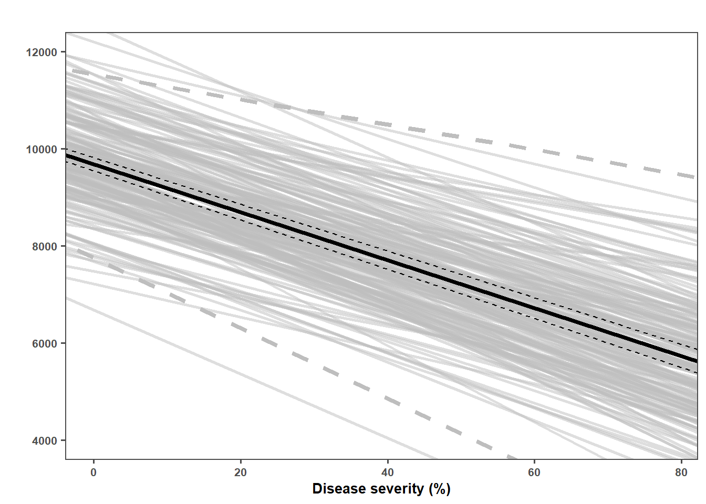
Joining
plot_grid(trials,lmer_plot,plot_sev, plot_yld, labels = c("(a)","(b)","(c)","(d)"), ncol = 2,
label_size = 10, label_x = -0.01)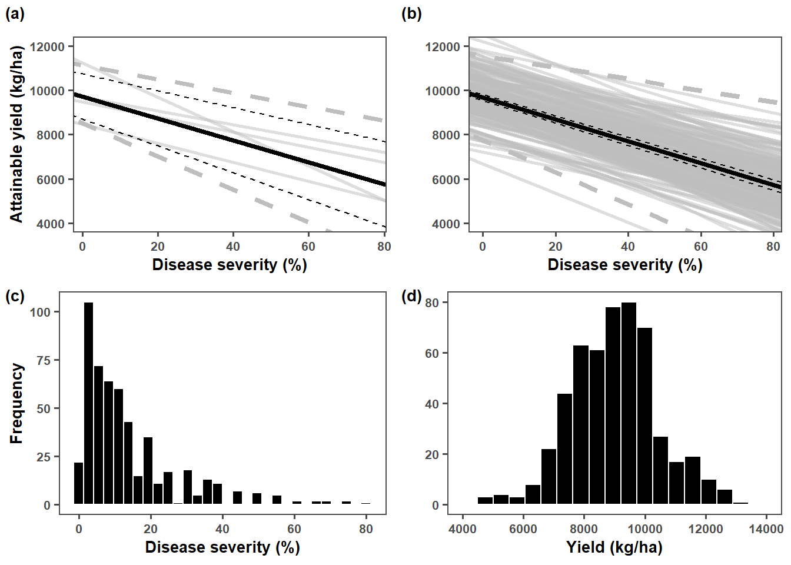
ggsave("fig/obs_simu_model.png", bg = "white", dpi = 600,width = 6, height = 4)cor(estria2$mean_sev, estria2$mean_yld)[1] -0.4051456cor(simulated_data_lmer$sev, simulated_data_lmer$yld)[1] -0.5508678Performance
Empirical
obs_lmer_predicted <- predict(obs_model_lmer)
obs_lmer_observed <- estria2$mean_yld
obs_lmer_residuals <- obs_lmer_observed - obs_lmer_predicted
obs_lmer_RMSE <- sqrt(mean(obs_lmer_residuals^2))
obs_lmer_MAE <- mean(abs(obs_lmer_residuals))
obs_lmer_correlation <- cor(obs_lmer_observed, obs_lmer_predicted)
performance::check_normality(obs_model_lmer)OK: residuals appear as normally distributed (p = 0.227).performance::check_heteroscedasticity(obs_model_lmer)Warning: Heteroscedasticity (non-constant error variance) detected (p < .001).performance::check_autocorrelation(obs_model_lmer)Warning: Autocorrelated residuals detected (p = 0.004).Simulated
simu_lmer_predicted <- predict(simu_model_lmer)
simu_lmer_observed <- simulated_data_lmer$yld
simu_lmer_residuals <- simu_lmer_observed - simu_lmer_predicted
simu_lmer_RMSE <- sqrt(mean(simu_lmer_residuals^2))
simu_lmer_MAE <- mean(abs(simu_lmer_residuals))
simu_lmer_correlation <- cor(simu_lmer_observed, simu_lmer_predicted)
performance::check_normality(simu_model_lmer)OK: residuals appear as normally distributed (p = 0.875).performance::check_heteroscedasticity(simu_model_lmer)Warning: Heteroscedasticity (non-constant error variance) detected (p < .001).performance::check_autocorrelation(simu_model_lmer)Warning: Autocorrelated residuals detected (p < .001).Visualization
Simulated
# Extrair os resíduos e quantis teóricos
lmer_residuals <- residuals(simu_model_lmer, type = "deviance")
lmer_qq_data <- data.frame(
theoretical = qqnorm(lmer_residuals, plot.it = FALSE)$x*1000,
residuals = qqnorm(lmer_residuals, plot.it = FALSE)$y
)
# Plotar o QQ plot
lmer_qq = lmer_qq_data %>%
ggplot(aes(x = theoretical, y = residuals)) +
geom_point() +
geom_abline(intercept = 0, slope = 1, color = "red", linetype = "dashed") +
scale_x_continuous(breaks = c(-3000,-2000,-1000,0,1000,2000,3000),
limits = c(-3000, 3000))+
scale_y_continuous(breaks = c(-3000,-2000,-1000,0,1000,2000,3000),
limits = c(-3000, 3000))+
labs(x = "Theoretical Quantiles", y = "") +
ggthemes::theme_few()+
theme(text = element_text(size = 12, face = "bold"))
lmer_qq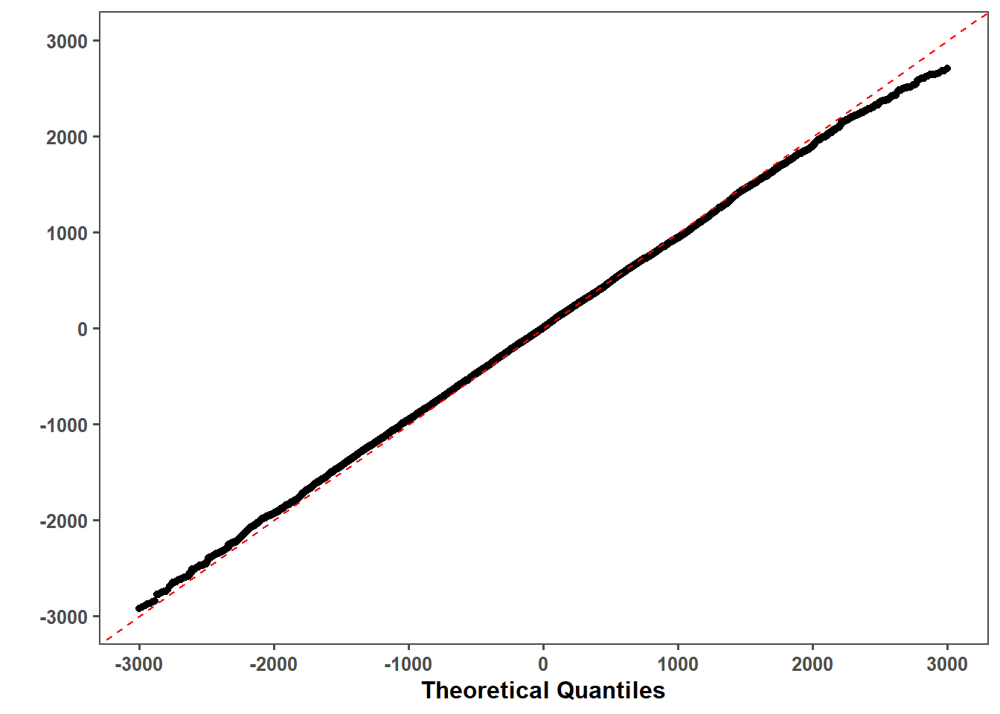
# Extrair preditores lineares e resíduos
lmer_linear_predictors <- predict(simu_model_lmer, type = "link")
lmer_residuals_data <- data.frame(
linear_predictors = lmer_linear_predictors,
residuals = lmer_residuals
)
# Plotar resíduos vs preditores lineares
lmer_predictors = lmer_residuals_data %>%
ggplot(aes(x = linear_predictors, y = residuals)) +
geom_point(alpha = 0.2, color = "grey", size = 2) +
geom_hline(yintercept = 0, color = "black", linetype = "dashed", size = 1.4) +
scale_x_continuous(breaks = c(4000,6000,8000,10000,12000),
limits = c(4000, 12000))+
scale_y_continuous(breaks = c(-3000,-2000,-1000,0,1000,2000,3000),
limits = c(-3000, 3000))+
labs(x = "Linear Predictors", y = "") +
ggthemes::theme_few()+
theme(text = element_text(size = 12, face = "bold"))# Calcular média e desvio-padrão dos resíduos
mean_res <- mean(lmer_residuals_data$residuals)
sd_res <- sd(lmer_residuals_data$residuals)
# Plotar o histograma e a curva acumulada normal
lmer_res_hist <- ggplot(lmer_residuals_data, aes(x = residuals)) +
geom_histogram(aes(y = ..density..), fill = "black", color = "white", bins = 20) + # Ajusta para densidade
stat_function(fun = dnorm, args = list(mean = mean_res, sd = sd_res),
color = "darkred", size = 1.2, linetype = "solid") + # Adiciona a curva normal
scale_x_continuous(breaks = c(-2500, -1250, 0, 1250, 2500),
limits = c(-2500, 2500)) +
labs(x = "Deviance Residuals", y = "") +
ggthemes::theme_few() +
theme(text = element_text(size = 12, face = "bold"))
# Exibir o gráfico
lmer_res_hist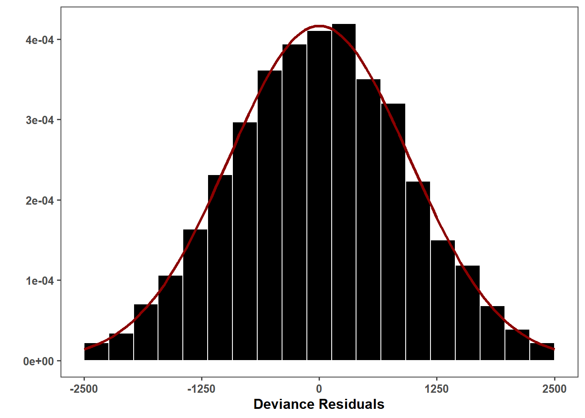
# Extrair valores observados e preditos
lmer_observed <- simulated_data_lmer$yld
lmer_predicted <- predict(simu_model_lmer, type = "response")
lmer_prediction_data <- data.frame(
observed = lmer_observed,
predicted = lmer_predicted
)
# Plotar valores preditos vs observados
lmer_pd_ob = lmer_prediction_data %>%
ggplot(aes(x = observed, y = predicted)) +
geom_point(alpha = 0.5, color = "grey", size = 2) +
geom_abline(intercept = 0, slope = 1, color = "black", linetype = "dashed", size = 1.4) +
scale_x_continuous(breaks = c(4000,6000,8000,10000,12000),
limits = c(4000, 12000))+
scale_y_continuous(breaks = c(4000,6000,8000,10000,12000),
limits = c(4000, 12000))+
labs(x = "Observed", y = "") +
ggthemes::theme_few()+
theme(text = element_text(size = 12, face = "bold"))
lmer_pd_ob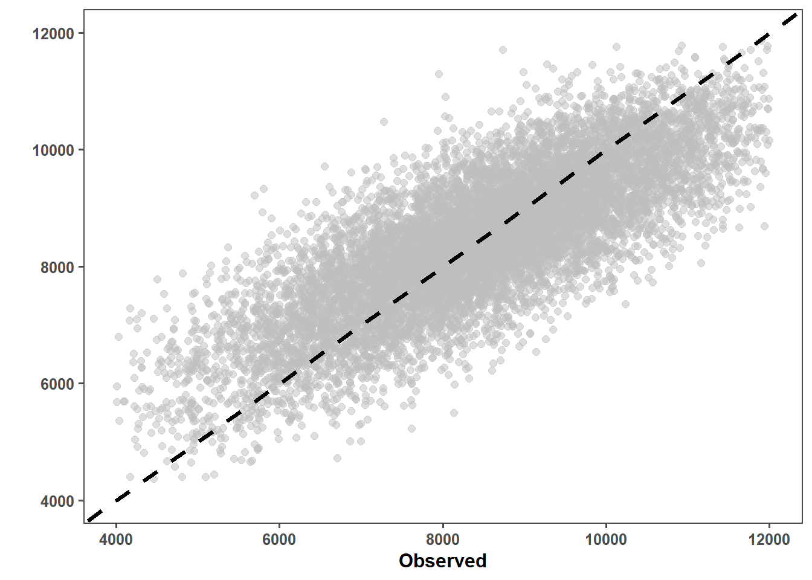
max(lmer_prediction_data$predicted)[1] 12122.53Observed
# Extrair os resíduos e quantis teóricos
obs_lmer_residuals <- residuals(obs_model_lmer, type = "deviance")
obs_lmer_qq_data <- data.frame(
theoretical = qqnorm(obs_lmer_residuals, plot.it = FALSE)$x*1000,
residuals = qqnorm(obs_lmer_residuals, plot.it = FALSE)$y
)
# Plotar o QQ plot
obs_lmer_qq = obs_lmer_qq_data %>%
filter(!residuals < -2000) %>%
ggplot(aes(x = theoretical, y = residuals)) +
geom_point() +
geom_abline(intercept = 0, slope = 1, color = "red", linetype = "dashed") +
scale_x_continuous(breaks = c(-3000,-2000,-1000,0,1000,2000,3000),
limits = c(-3000, 3000))+
scale_y_continuous(breaks = c(-3000,-2000,-1000,0,1000,2000,3000),
limits = c(-3000, 3000))+
labs(x = "Theoretical Quantiles", y = "Dev. Residuals") +
ggthemes::theme_few()+
theme(text = element_text(size = 12, face = "bold"))
obs_lmer_qq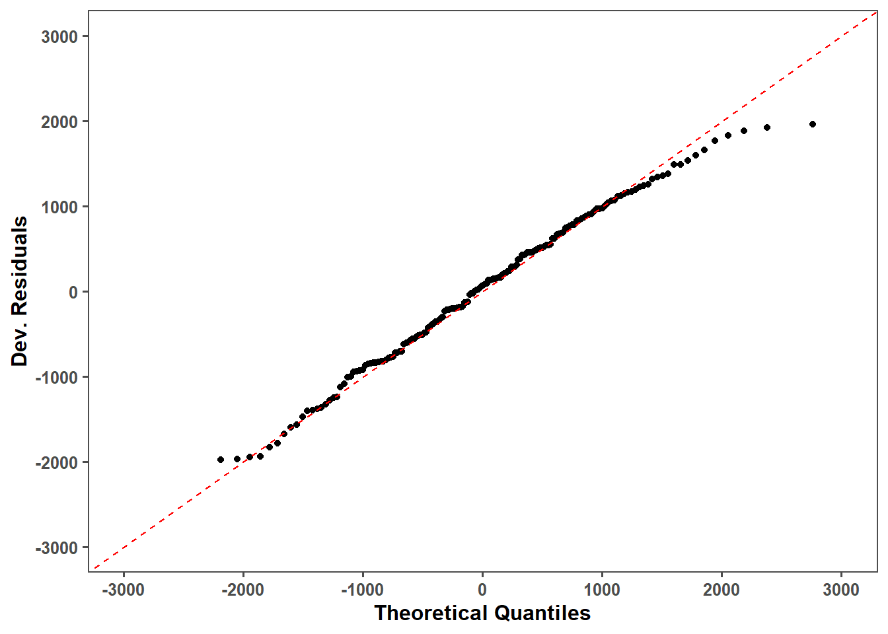
# Extrair preditores lineares e resíduos
obs_lmer_linear_predictors <- predict(obs_model_lmer, type = "link")
obs_lmer_residuals_data <- data.frame(
linear_predictors = obs_lmer_linear_predictors,
residuals = obs_lmer_residuals
)
# Plotar resíduos vs preditores lineares
obs_lmer_predictors = obs_lmer_residuals_data %>%
filter(!residuals < -2000) %>%
ggplot(aes(x = linear_predictors, y = residuals)) +
geom_point(alpha = 0.2, color = "grey", size = 2) +
geom_hline(yintercept = 0, color = "black", linetype = "dashed", size = 1.4) +
scale_x_continuous(breaks = c(4000,6000,8000,10000,12000),
limits = c(4000, 12000))+
scale_y_continuous(breaks = c(-3000,-2000,-1000,0,1000,2000,3000),
limits = c(-3000, 3000))+
labs(x = "Linear Predictors", y = "Dev. Residuals") +
ggthemes::theme_few()+
theme(text = element_text(size = 12, face = "bold"))# Calcular média e desvio-padrão dos resíduos
mean_res <- mean(obs_lmer_residuals_data$residuals)
sd_res <- sd(obs_lmer_residuals_data$residuals)
# Plotar o histograma e a curva acumulada normal
obs_lmer_res_hist <- ggplot(obs_lmer_residuals_data, aes(x = residuals)) +
geom_histogram(aes(y = ..density..), fill = "black", color = "white", bins = 20) + # Ajusta para densidade
stat_function(fun = dnorm, args = list(mean = mean_res, sd = sd_res),
color = "darkred", size = 1.2, linetype = "solid") + # Adiciona a curva normal
scale_x_continuous(breaks = c(-2500, -1250, 0, 1250, 2500),
limits = c(-2500, 2500)) +
labs(x = "Deviance Residuals", y = "Frequency") +
ggthemes::theme_few() +
theme(text = element_text(size = 12, face = "bold"))
# Exibir o gráfico
obs_lmer_res_hist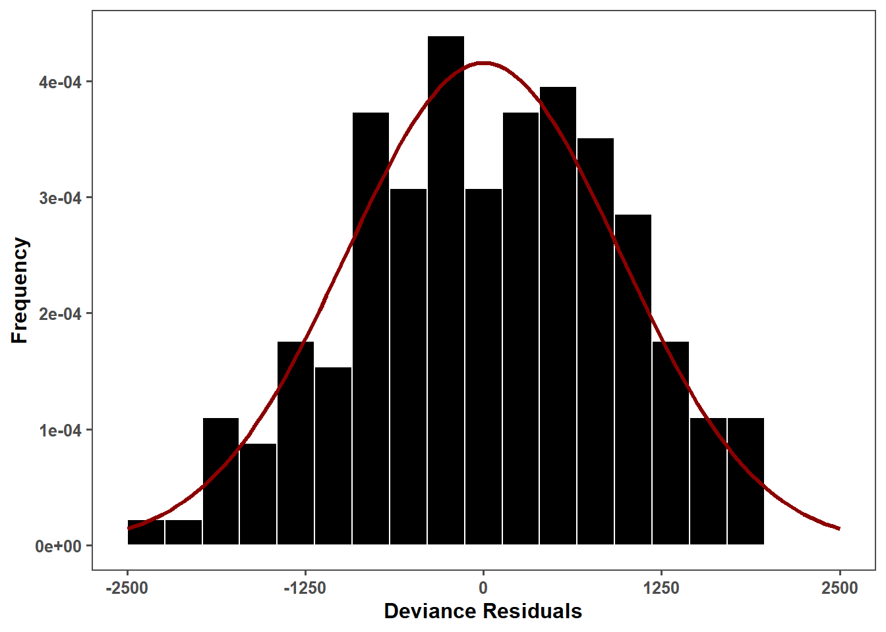
# Extrair valores observados e preditos
obs_lmer_observed <- estria2$mean_yld
obs_lmer_predicted <- predict(obs_model_lmer, type = "response")
obs_lmer_prediction_data <- data.frame(
observed = obs_lmer_observed,
predicted = obs_lmer_predicted
)
# Plotar valores preditos vs observados
obs_lmer_pd_ob = obs_lmer_prediction_data %>%
ggplot(aes(x = observed, y = predicted)) +
geom_point(alpha = 0.5, color = "grey", size = 2) +
geom_abline(intercept = 0, slope = 1, color = "black", linetype = "dashed", size = 1.4) +
scale_x_continuous(breaks = c(4000,6000,8000,10000,12000),
limits = c(4000, 12000))+
scale_y_continuous(breaks = c(4000,6000,8000,10000,12000),
limits = c(4000, 12000))+
labs(x = "Observed", y = "Predicted") +
ggthemes::theme_few()+
theme(text = element_text(size = 12, face = "bold"))
obs_lmer_pd_ob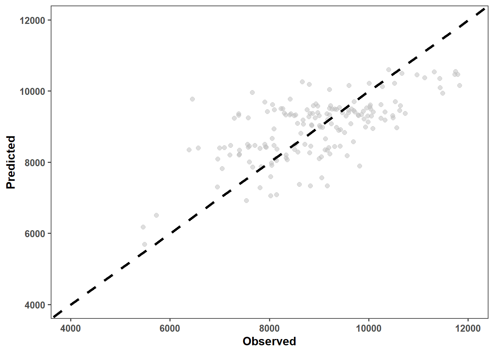
Plotting
#plot_grid(obs_lmer_pd_ob,lmer_pd_ob,
# obs_lmer_qq,lmer_qq,
# obs_lmer_predictors,lmer_predictors,
# obs_lmer_res_hist,lmer_res_hist, ncol = 2, labels = c("a"),
# label_x = -0.01,label_y = 0.01)
(obs_lmer_pd_ob | lmer_pd_ob) /
(obs_lmer_qq | lmer_qq) /
(obs_lmer_predictors | lmer_predictors) /
(obs_lmer_res_hist | lmer_res_hist) +
plot_annotation(tag_levels = "a", tag_prefix = "(", tag_suffix = ")") &
theme(plot.tag = element_text(face = "bold", size = 14))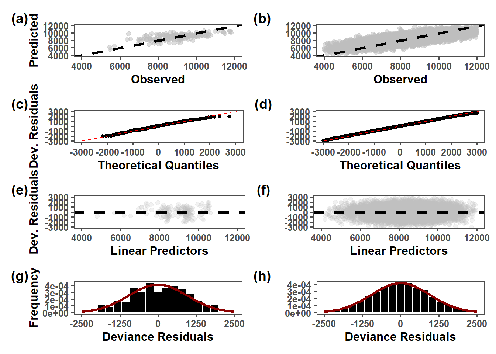
ggsave("fig/lmm_residue.png", dpi = 600, bg = "white", height = 6, width = 8)Power analysis of model by simulation
Severity
library(simr)
library(ggplot2)
library(dplyr)
# Ajuste do modelo original
sev_lmer <- lmer(mean_yld ~ mean_sev + (1 | trial), data = estria2)
# Criar um modelo extendido para simulação
ext_sev_lmer <- extend(sev_lmer, along = "mean_sev", n = 10000)
# Rodar várias simulações do powerCurve e armazenar os resultados
num_simulations <- 50 # Número de simulações individuais
power_results <- list()
for (i in 1:num_simulations) {
power_results[[i]] <- as.data.frame(summary(powerCurve(ext_sev_lmer,
along = "mean_sev",
nsim = 100,
breaks = 1:100)))
}
power_df <- bind_rows(power_results, .id = "simulation")
#write_xlsx(power_df, "data/power_df.xlsx")power_df = read_xlsx("data/power_df.xlsx")
power_df2 <- power_df %>%
group_by(nlevels) %>%
summarise(mean = mean(mean, na.rm = TRUE),
lower = mean(lower, na.rm = TRUE),
upper = mean(upper, na.rm = TRUE))
power_df %>%
filter(mean >= 0.80 & mean <=0.85)Plotting
ggplot() +
# Linhas cinzas para cada simulação individual
geom_line(data = power_df, aes(x = nlevels, y = mean * 100, group = simulation),
color = "gray", alpha = 0.4) +
# Linha da média (laranja)
geom_line(data = power_df2, aes(x = nlevels, y = mean * 100),
color = "black", size = 1.2) +
# Linhas superior e inferior (preto, tracejado)
geom_line(data = power_df2, aes(x = nlevels, y = upper * 100),
color = "black", linetype = "dashed", size = 0.8) +
geom_line(data = power_df2, aes(x = nlevels, y = lower * 100),
color = "black", linetype = "dashed", size = 0.8)+
scale_x_continuous(breaks = c(0,5,10,15,20,25,30,35,40,45,50), limits = c(0, 50))+
scale_y_continuous(breaks = c(0,10,20,30,40,50,
60,70,80,90,100), limits = c(0, 100))+
geom_hline(yintercept = 80, linetype = "dashed", size = 1, color = "darkblue")+
geom_vline(xintercept = c(25), linetype = 2, size = 1, color = "darkblue")+
coord_cartesian(xlim = c(0,50))+
ggthemes::theme_few()+
theme(text = element_text(size = 12, face = "bold"),
legend.position = "none")+
labs(x = "Disease severity (%)",
y = "Power (%)")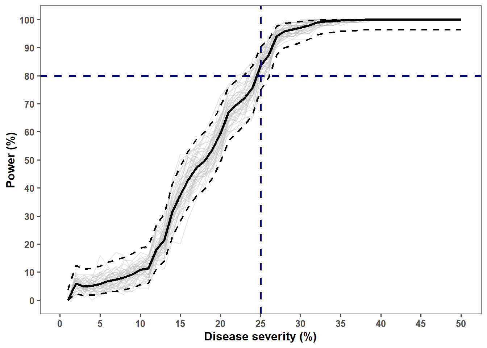
ggsave("fig/power_model.png", bg = "white", dpi = 600,width = 6, height = 4)Damage
Economic losses
sev = data.frame(sev = seq(20,100, by = 10))
yield = data.frame(yld = seq(4000,12000,by = 500))
price = data.frame(price = seq(100,300, by = 100))
combined_data <- expand.grid(sev = sev$sev, yld = yield$yld, price = price$price)
ylmer_simu_min = combined_data %>%
mutate(loss =((((((49.3/9691.0)*sev)*100)*yld)/100)/1000)*price)
custom_labels <- c(
"100" = "100 USD/ton",
"200" = "200 USD/ton",
"300" = "300 USD/ton"
)
heat_loss =ylmer_simu_min %>%
filter(price == "200") %>%
ggplot(aes(sev,yld, fill = loss)) +
geom_tile(color = "white", size = 0.8) +
scale_x_continuous(breaks = seq(20, 100, by = 10)) +
scale_y_continuous(breaks = seq(4000, 12000, by = 500)) +
scale_fill_viridis_b(option = "E",
guide = guide_colorbar(barwidth = 0.3, barheight = 15),
breaks = seq(0, 2000, by = 300))+
geom_text(aes(label = as.integer(loss)),
size = 3, colour = "white")+
#facet_wrap(~price, labeller = as_labeller(custom_labels))+
theme_minimal_grid(font_size = 14) +
labs(
y = "Attainable yield (kg/ha)",
x = "Disease severity (%)",
fill = "L (USD/ha)"
)+
theme(text = element_text(size = 14),
axis.title = element_text(size = 20, face = "bold"),
strip.text = element_text(size= 14, vjust = -1),
#axis.text.y = element_text(hjust = -3),
axis.text.x = element_text(vjust = 3),
legend.position = "right",
legend.justification = 0.5,
panel.grid = element_blank())
hist_loss = ylmer_simu_min |>
filter(price == "200") %>%
ggplot(aes(loss))+
geom_histogram(color = "white", fill= "#1c1c3c", bins = 15)+
facet_wrap(~price)+
ggthemes::theme_few() +
scale_x_continuous(breaks = seq(0,2100, by = 300)) +
labs(
y = "Frequency",
x = "Economic losses (USD/ha)")+
theme(
text = element_text(face = "bold", size = 14),
axis.title = element_text(size = 20, face = "bold"),
axis.text.x = element_text(vjust = 1, size = 14, face = "bold"),
axis.text.y = element_text(vjust = 1, size = 14, face = "bold"),
legend.position = "none",
legend.justification = 0.5,
panel.grid = element_blank(),
strip.text = element_blank()
)
loss_200 = ylmer_simu_min |>
filter(price == "200")
median(loss_200$loss)[1] 447.6731hist_loss = ylmer_simu_min %>%
filter(price == "200") %>%
ggplot(aes(x = loss)) +
stat_halfeye(fill = "#ffc425", alpha = 0.7)+
geom_vline(aes(xintercept = 447.6731), color = "#1c1c3c", linetype = "dashed", size = 2) +
ggthemes::theme_few() +
#scale_x_continuous(breaks = seq(0,2100, by = 100)) +
scale_x_continuous(breaks=c(50,150,250,350,450,550,
650,750,850,950,1050,
1150,1250,1350,1450,1550,1650,1750,1850,1950,
2150))+
labs(
y = "Density",
x = "Economic losses (USD/ha)")+
theme(
text = element_text(face = "bold", size = 14),
axis.title = element_text(size = 20, face = "bold"),
axis.text.x = element_text(vjust = 1, size = 14, face = "bold"),
axis.text.y = element_text(vjust = 1, size = 14, face = "bold"),
legend.position = "none",
legend.justification = 0.5,
panel.grid = element_blank(),
strip.text = element_blank()
)# Below 25%
sev_loss_b25 = data.frame(sev = seq(5,25, by = 5))
combined_data_b25 <- expand.grid(sev = sev_loss_b25$sev, yld = yield$yld)
loss_25 = ((((((49.3/9691.0)*25)*combined_data_b25$sev)*combined_data_b25$yld)/100)/1000)*200
mean(loss_25)[1] 30.52317min(loss_25)[1] 5.087194max(loss_25)[1] 76.30791# Above 25%
sev_loss_a25 = data.frame(sev = seq(25,100, by = 5))
combined_data_a25 <- expand.grid(sev = sev_loss_a25$sev, yld = yield$yld)
loss_25 = ((((((49.3/9691.0)*combined_data_a25$sev)*combined_data_a25$sev)*combined_data_a25$yld)/100)/1000)*200
mean(loss_25)[1] 361.1908min(loss_25)[1] 25.43597max(loss_25)[1] 1220.927(hist_loss+heat_loss) +
plot_annotation(tag_levels = "a", tag_prefix = "(", tag_suffix = ")")&
theme(plot.tag = element_text(face = "bold", size = 24)) 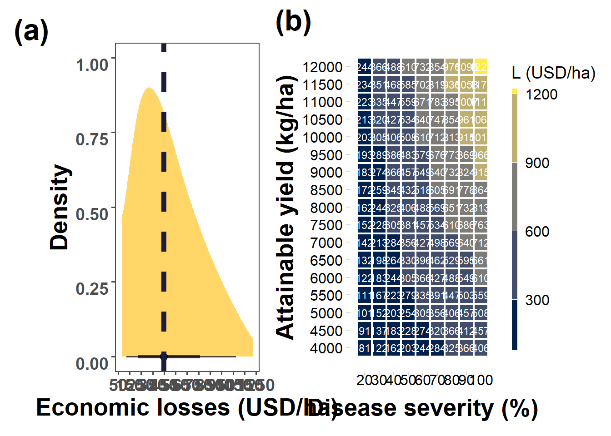
ggsave("fig/loss.png", bg = "white",
dpi = 600,height =8, width = 16)Relative yield
lmer_slope= lmer_stats %>%
filter(parameters == "Slope")
library(minpack.lm)
Fx =environment(ecdf(-lmer_slope$estimate))$y
x = environment(ecdf(-lmer_slope$estimate))$x
slope_reg = nlsLM(Fx ~ pgamma(x, shape, rate,log = FALSE) ,
start = c(shape = 2.5, rate = 0.13),
control = nls.lm.control(maxiter = 1024))
summary(slope_reg)
Formula: Fx ~ pgamma(x, shape, rate, log = FALSE)
Parameters:
Estimate Std. Error t value Pr(>|t|)
shape 29.25149 0.62746 46.62 <2e-16 ***
rate 0.58169 0.01255 46.37 <2e-16 ***
---
Signif. codes: 0 '***' 0.001 '**' 0.01 '*' 0.05 '.' 0.1 ' ' 1
Residual standard error: 0.02492 on 198 degrees of freedom
Number of iterations to convergence: 12
Achieved convergence tolerance: 1.49e-08shape_res = summary(slope_reg)$coef[1]
rate_res = summary(slope_reg)$coef[2]
ks.test(Fx, pgamma(x, shape_res, rate_res))
Asymptotic two-sample Kolmogorov-Smirnov test
data: Fx and pgamma(x, shape_res, rate_res)
D = 0.08, p-value = 0.5441
alternative hypothesis: two-sidedslope_plot = lmer_slope %>%
ggplot(aes(x = estimate)) +
geom_histogram(aes(y = ..density..), fill = "black", color = "white", bins = 20) + # Ajusta para densidade
stat_function(fun=function(x) dgamma(-x, shape_res, rate_res), size = 1.2, color = "darkblue")+
ggthemes::theme_few()+
#facet_wrap(~approach)+
labs(x = "Slope (kg/p.p)",
y = "Frequency")+
theme(text = element_text(size = 10, face = "bold"))
lmer_intercept= lmer_stats %>%
filter(parameters == "Intercept")
shapiro.test(lmer_slope$estimate)
Shapiro-Wilk normality test
data: lmer_slope$estimate
W = 0.98551, p-value = 0.03812mean_intercept = mean(lmer_intercept$estimate)
sd_intercept = sd(lmer_intercept$estimate)
intercept_plot <- lmer_intercept %>%
ggplot(aes(x = estimate)) +
geom_histogram(aes(y = ..density..), fill = "black", color = "white", bins = 20) + # Ajusta para densidade
stat_function(fun = dnorm, args = list(mean = mean_intercept, sd = sd_intercept),
color = "darkblue", size = 1.2, linetype = "solid")+
ggthemes::theme_few()+
#facet_wrap(~approach)+
labs(x = "Intercept (kg/ha)",
y = "Frequency")+
theme(text = element_text(size = 10, face = "bold"))set.seed(1)
u_j <- rnorm(100, mean = 0, sd = random_effect_sd)
#mean_uj = mean(u_j)
df <- expand.grid(sev = seq(0, 100, by = 1), rep = 1:100)
df$yield = 9691.0 - 49.38*df$sev - rep(u_j, each = 101)
df$relative <- df$yield *100 / 9691.0
df2 = df %>%
group_by(sev) %>%
summarise(mean = mean(relative),
up_95 = quantile(relative, 0.975),
low_95 = quantile(relative, 0.025))
relative_plot = ggplot() +
geom_line(data = df, aes(x = sev, y = relative, group = rep),
color = "grey", alpha = 0.4) + # Linhas cinzas para cada simulação
geom_line(data = df2, aes(x = sev, y = mean),
color = "black", size = 1.4) + # Linha média
geom_line(data = df2, aes(x = sev, y = up_95),
color = "black", linetype = "dashed",size = 1) + # IC superior
geom_line(data = df2, aes(x = sev, y = low_95),
color = "black", linetype = "dashed",size = 1) + # IC inferior
scale_y_continuous(breaks = c(20,30, 40,50, 60,
70,80,90,100),
limits = c(20, 100),
expand = c(0, 2))+
scale_x_continuous(breaks = c(0,10,20,30,40,50,60,70,80,90, 100),
limits = c(0, 100),
expand = c(0, 2))+
coord_cartesian(xlim = c(0,100), ylim = c(20,100))+
labs(x = "Disease severity (%)", y = "Relative yield (%) ")+
geom_hline(yintercept = 87,
linetype = 2, color = "darkblue", size = 1)+
geom_vline(xintercept = c(25), linetype = 2, color = "darkblue", size = 1)+
ggthemes::theme_few()+
theme(text = element_text(size = 10, face = "bold"),
axis.text.x = element_text(size = 10, face = "bold"),
axis.text.y = element_text(size = 10, face = "bold"))library(patchwork)
#plot_grid(slope_plot / intercept_plot | relative_plot, ncol = 1,
# label_x = -0.02, label_size = 12)
(slope_plot / intercept_plot |relative_plot) +
plot_annotation(tag_levels = "a", tag_prefix = "(", tag_suffix = ")")&
theme(plot.tag = element_text(face = "bold", size = 12))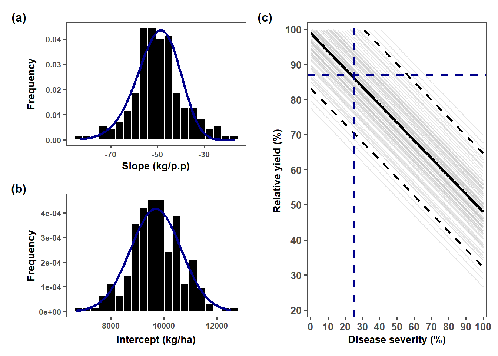
ggsave("fig/relative_parameters.png", bg = "white", dpi = 600,
height = 4, width = 6)Break-even probability
Framework simulation
NORTA function
gera.norm.bid.geral<-function(tamanho.amostra,correlacao,m1,m2,sigma1,sigma2)
{
ro<-correlacao
n<-tamanho.amostra
x<-matrix(0,n,2)
for (i in 1:n)
{x[i,1]<-rnorm(1,m1,sigma1)
x[i,2]<-rnorm(1,m2+ro*sigma1/sigma2*(x[i,1]-m1),sigma2*(sqrt(1-ro^2)))
}
return(x)
}
gc() used (Mb) gc trigger (Mb) max used (Mb)
Ncells 2949079 157.5 4708747 251.5 4708747 251.5
Vcells 5853168 44.7 64697311 493.7 80871135 617.0estria2 %>%
ggplot(aes(mean_sev))+
geom_histogram(color= "white", fill = "black")+
ggthemes::theme_few()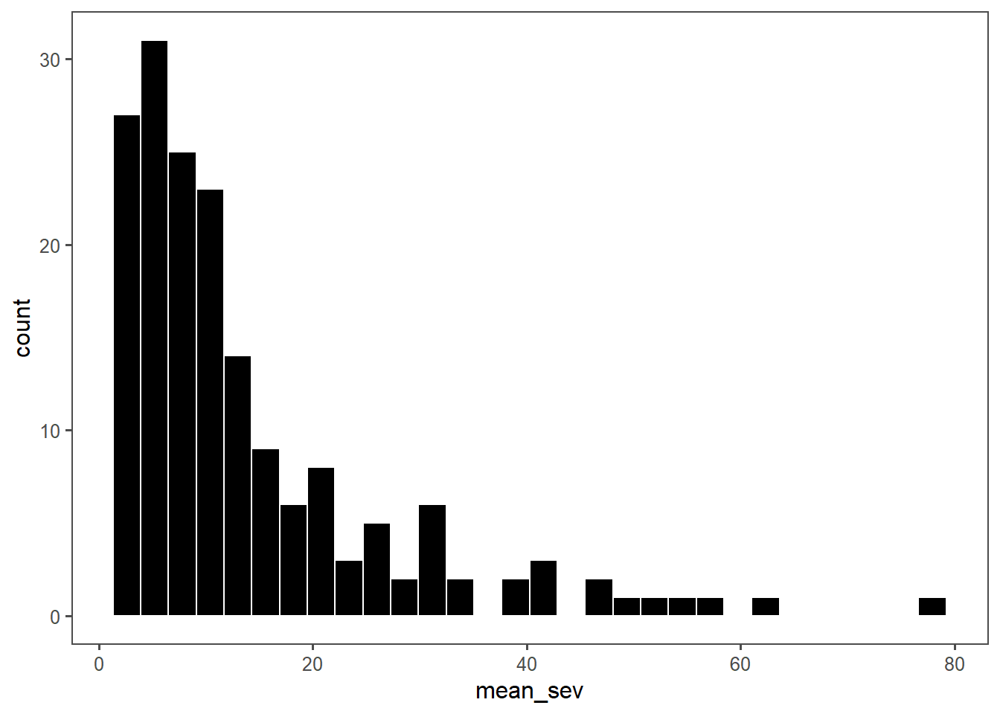
Severity
library(minpack.lm)
sev = simulated_data_lmer$sev
#sev = estria2$mean_sev
Fx_sev = environment(ecdf(sev))$y
x_sev = environment(ecdf(sev))$x/100
summary(nlsLM(Fx_sev ~ pbeta(x_sev, shape1, shape2, log = FALSE) ,
start = c(shape1 = 1, shape2 = 1),
control = nls.lm.control(maxiter = 100000)))
Formula: Fx_sev ~ pbeta(x_sev, shape1, shape2, log = FALSE)
Parameters:
Estimate Std. Error t value Pr(>|t|)
shape1 1.2041125 0.0005694 2115 <2e-16 ***
shape2 3.6414300 0.0020387 1786 <2e-16 ***
---
Signif. codes: 0 '***' 0.001 '**' 0.01 '*' 0.05 '.' 0.1 ' ' 1
Residual standard error: 0.004923 on 9998 degrees of freedom
Number of iterations to convergence: 7
Achieved convergence tolerance: 1.49e-08ks.test(Fx_sev,pbeta(x_sev,1.2041125,3.6414300))
Asymptotic two-sample Kolmogorov-Smirnov test
data: Fx_sev and pbeta(x_sev, 1.2041125, 3.64143)
D = 0.0111, p-value = 0.5689
alternative hypothesis: two-sidedplot(x_sev,Fx_sev)
curve(pbeta(x, 1.2041125,3.6414300),0,1, add = T)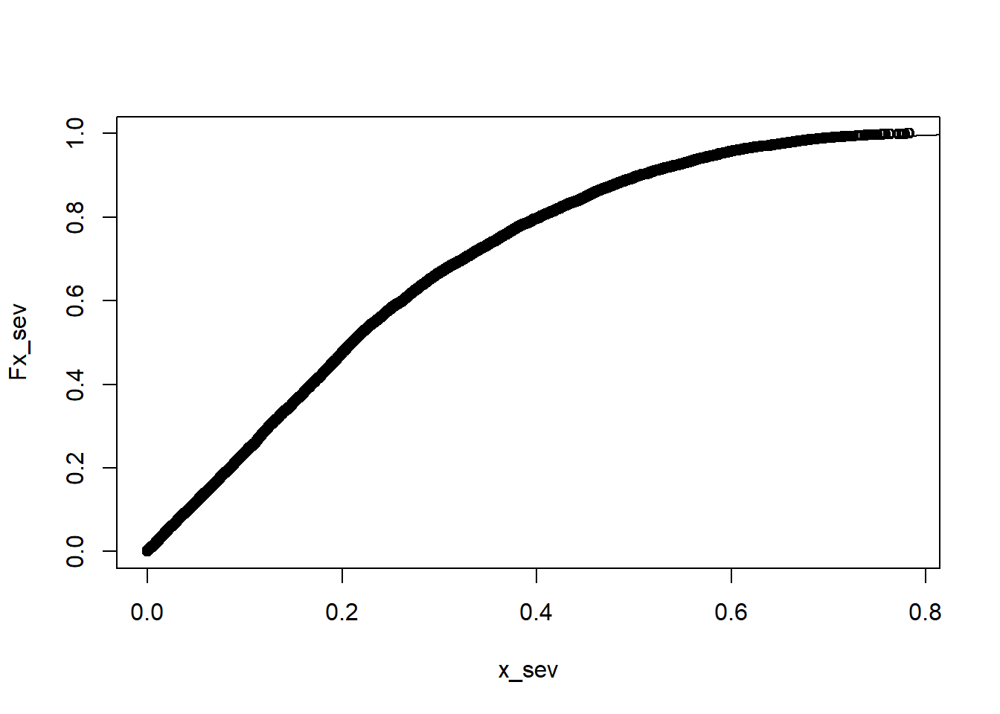
Intercept
intercept_bls = regression_trial_m
intercept_bls[,1] = NULL
mean_intercept = mean(intercept_bls$Intercept)
sd_intercept = sd(intercept_bls$Intercept)
plot(ecdf(intercept_bls$Intercept))
curve(pnorm(x, mean_intercept,sd_intercept), add = T, col = "red")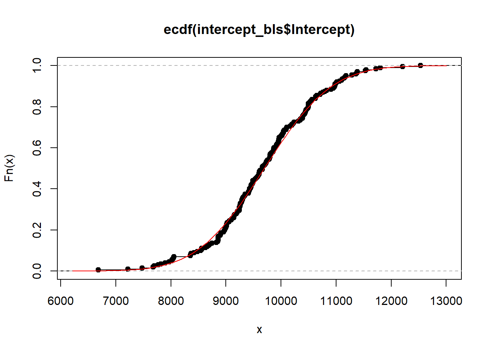
Fx_res_b0 = environment(ecdf(intercept_bls$Intercept))$y
x_res_b0= environment(ecdf(intercept_bls$Intercept))$x
ks.test(Fx_res_b0, pnorm(x_res_b0, mean(intercept_bls$Intercept), sd(intercept_bls$Intercept)))
Asymptotic two-sample Kolmogorov-Smirnov test
data: Fx_res_b0 and pnorm(x_res_b0, mean(intercept_bls$Intercept), sd(intercept_bls$Intercept))
D = 0.045, p-value = 0.9874
alternative hypothesis: two-sidedSlope
slope_bls = regression_trial_m
slope_bls[,2] = NULL
mean_slope = mean(slope_bls$Slope)
sd_slope = sd(slope_bls$Slope)
plot(ecdf(slope_bls$Slope))
curve(pnorm(x, mean_slope, sd_slope), add = T, col = "red")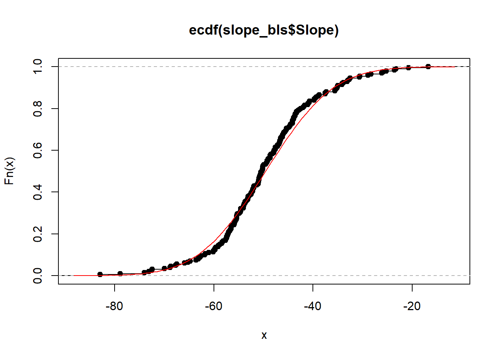
library(minpack.lm)
Fx =environment(ecdf(-slope_bls$Slope))$y
x = environment(ecdf(-slope_bls$Slope))$x
slope_reg = nlsLM(Fx ~ pgamma(x, shape, rate,log = FALSE) ,
start = c(shape = 2.5, rate = 0.13),
control = nls.lm.control(maxiter = 1024))
summary(slope_reg)
Formula: Fx ~ pgamma(x, shape, rate, log = FALSE)
Parameters:
Estimate Std. Error t value Pr(>|t|)
shape 29.25149 0.62746 46.62 <2e-16 ***
rate 0.58169 0.01255 46.37 <2e-16 ***
---
Signif. codes: 0 '***' 0.001 '**' 0.01 '*' 0.05 '.' 0.1 ' ' 1
Residual standard error: 0.02492 on 198 degrees of freedom
Number of iterations to convergence: 12
Achieved convergence tolerance: 1.49e-08shape = summary(slope_reg)$coef[1]
rate = summary(slope_reg)$coef[2]
Fx =environment(ecdf(-slope_bls$Slope))$y
x = environment(ecdf(-slope_bls$Slope))$x
ks.test(Fx, pgamma(x, shape, rate))
Asymptotic two-sample Kolmogorov-Smirnov test
data: Fx and pgamma(x, shape, rate)
D = 0.08, p-value = 0.5441
alternative hypothesis: two-sidedcor(regression_trial_m$Slope,regression_trial_m$Intercept)[1] -0.1547164j_res<-gera.norm.bid.geral(10000,0.15,0,0,1,1)
plot(j_res[,1],j_res[,2])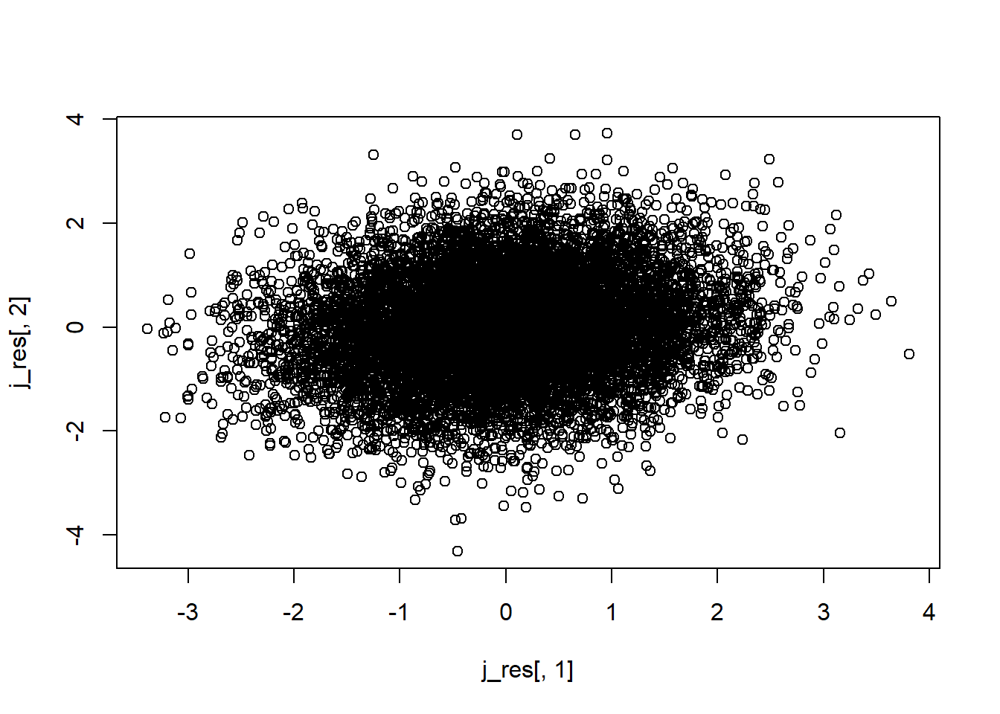
Corn price
corn = gsheet2tbl("https://docs.google.com/spreadsheets/d/1LcLVKb6bW7tVaiu6reLsT8sjFR1hwUcembZ7uxAoBP8/edit?usp=sharing")
corn = corn %>%
filter(state %in% c("PR")) %>%
filter(year <= 2019)bls_price = corn %>%
#filter(year <= 2019) %>%
mutate(price = (price/60)/4)
bls_pricemin(bls_price$price)[1] 0.07679167mean(bls_price$price)[1] 0.1153426mean(bls_price$price)[1] 0.1153426median(bls_price$price)[1] 0.12sd(bls_price$price)[1] 0.0198195bls_price %>%
ggplot(aes(price))+
geom_histogram(fill = "steelblue", color = "white", bins = 10)+
ggthemes::theme_few()+
labs(x = "Soybean prince",
y = "Frequency")+
scale_x_continuous(breaks = seq(0,1,by=0.025))+
theme(text = element_text(size = 12, face = "bold"),
axis.title = element_text(size = 14, face = "bold"),
legend.position = "none")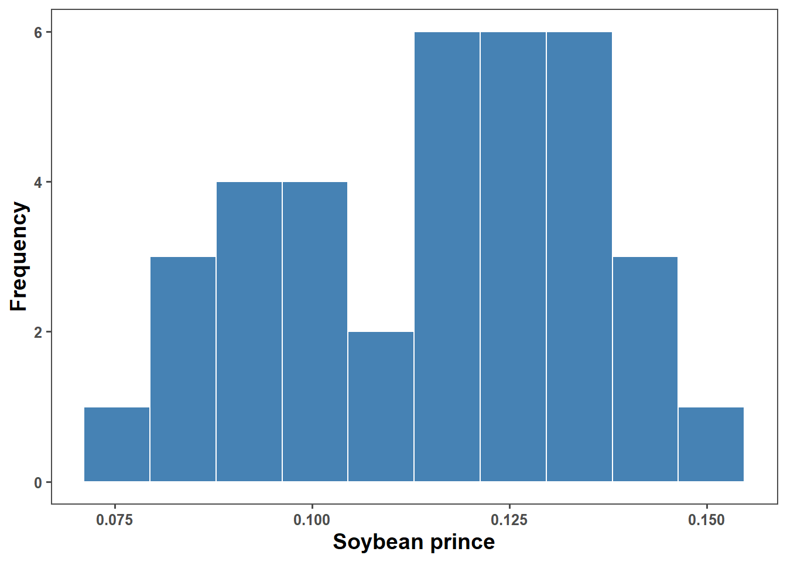
hist((bls_price$price), prob = T)
curve(dnorm(x, mean(bls_price$price), sd(bls_price$price)),0.15,0.35, add = T)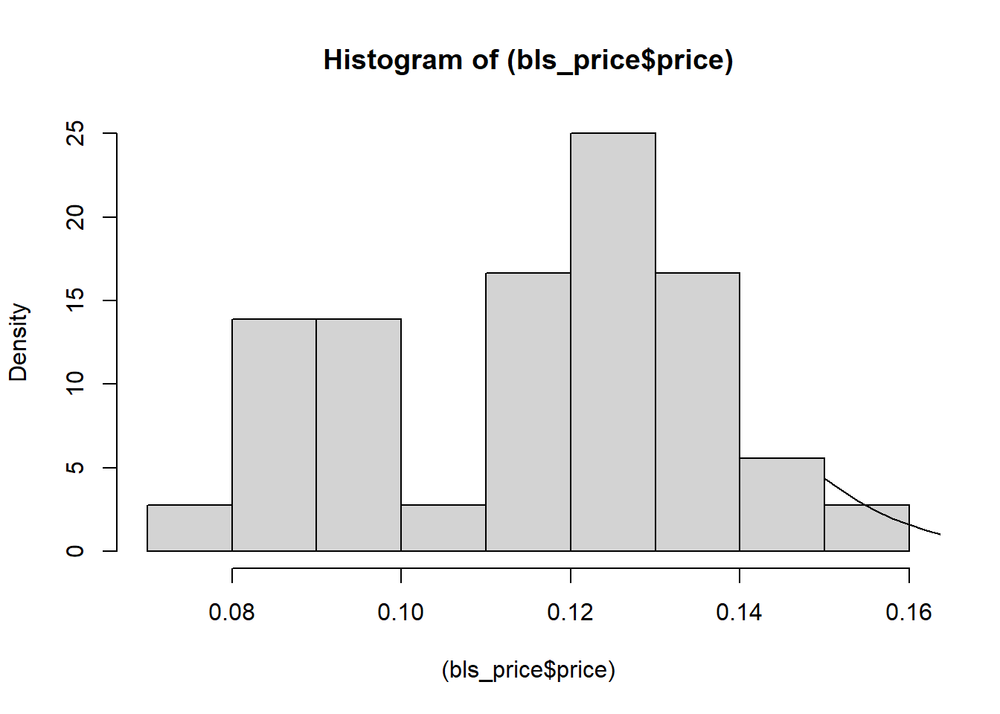
plot(ecdf(bls_price$price))
curve(pnorm(x, mean(bls_price$price), sd(bls_price$price)),0.2,0.35, add = T)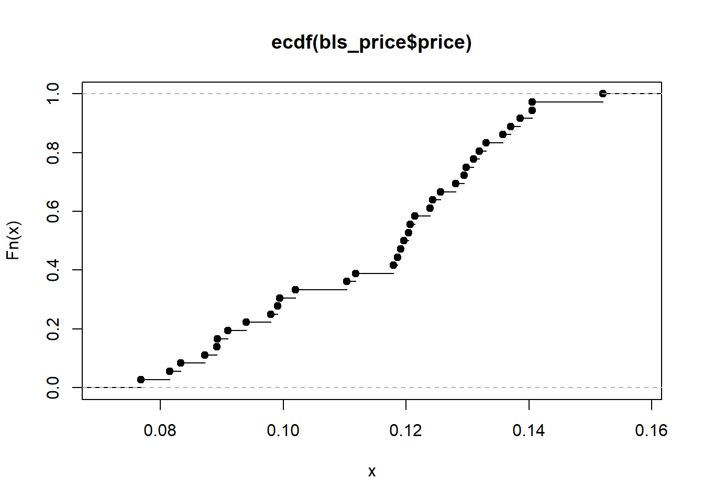
mean(bls_price$price)[1] 0.1153426median(bls_price$price)[1] 0.12shapiro.test(bls_price$price)
Shapiro-Wilk normality test
data: bls_price$price
W = 0.94849, p-value = 0.0937Kolmogorov-Smirnov Test
Fx = environment(ecdf(bls_price$price))$y
x= environment(ecdf(bls_price$price))$x
ks.test(Fx, pnorm(x, mean(bls_price$price), sd(bls_price$price)))
Exact two-sample Kolmogorov-Smirnov test
data: Fx and pnorm(x, mean(bls_price$price), sd(bls_price$price))
D = 0.13889, p-value = 0.8849
alternative hypothesis: two-sidedplot(Fx, pnorm(x, mean(bls_price$price), sd(bls_price$price)))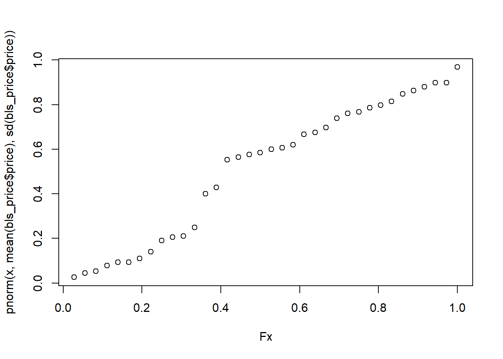
Vizualization
price_plot = bls_price %>%
ggplot(aes(price))+
geom_histogram(aes(y = ..density..),bins = 10, color = "white", fill = "black")+ #"#1C8C20"
#stat_function(fun=function(x) dnorm(x, mean(sbr_price$price), sd(sbr_price$price)), color= "black", size = 1.2)+
ggthemes::theme_few()+
labs(x="Soybean price (USD/kg)", y = "Frequency")+
scale_x_continuous(breaks = seq(0,1,by=0.025))+
theme(text = element_text(size = 12, face = "bold"),
axis.title = element_text(size = 14, face = "bold"),
legend.position = "none")
price_plot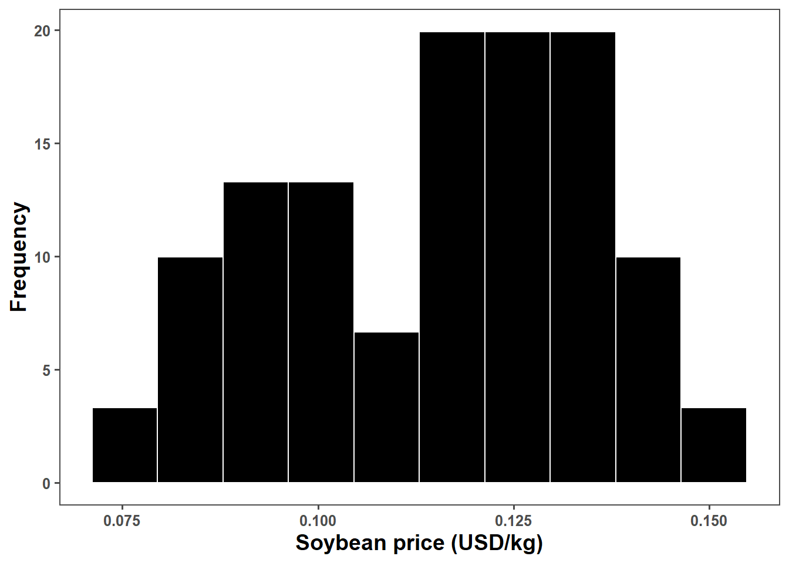
ggsave("fig/soybean_price.png", bg = "white",
dpi = 600, height = 5, width = 6)Simulation
set.seed(1)
n=40000
lambda = seq(0,1, by=0.05)
fun_price = seq(-10, 260, by=15)
n_aplication = 1
operational_cost = 10
comb_matrix = as.matrix(data.table::CJ(lambda,fun_price))
colnames(comb_matrix) = c("lambda","fun_price")
comb_matrix = cbind(comb_matrix,operational_cost, n_aplication)
C = comb_matrix[,"n_aplication"]*(comb_matrix[,"operational_cost"]+comb_matrix[,"fun_price"] )
comb_matrix = cbind(comb_matrix,C)
N = length(comb_matrix[,1])*n
big_one = matrix(0, ncol = 12, nrow =N)
big_one[,1] = rep(comb_matrix[,1],n)
big_one[,2] = rep(comb_matrix[,2],n)
big_one[,3] = rep(comb_matrix[,3],n)
big_one[,4] = rep(comb_matrix[,4],n)
big_one[,5] = rep(comb_matrix[,5],n)
set.seed(1)
sn = rbeta(N, 1.2041125,3.6414300)
sf = sn*(1-big_one[,1])
# simulating the coeficientes
set.seed(1)
normal_correlated<-gera.norm.bid.geral(N,0.15,0,0,1,1)
b0_n = pnorm(normal_correlated[,2])
b1_n = pnorm(normal_correlated[,1])
b0 = qnorm(b0_n, mean_intercept,sd_intercept)
b1 = -qgamma(b1_n, shape, rate,)
rm(b0_n,b1_n,normal_correlated)
# Calculating the alha coeficient
alfa = (b1/b0)*100
# Calculating yield gain
## Moderate Resistant (MR)
yn = b0 - (-alfa*b0*sn)
yf = b0 - (-alfa*b0*sf)
# Simulating soybean price
set.seed(1)
soy_price = rnorm(N, mean(bls_price$price),sd(bls_price$price))
#income = yield_gain*soy_price # calculating the income
big_one[,6] = yn
big_one[,7] = yf
big_one[,8] = b1
big_one[,9] = b0
big_one[,10] = sn
big_one[,11] = sf
big_one[,12] = soy_price
colnames(big_one) = c("lambda","fun_price","operational_cost","n_aplication","C","yn","yf",
"b1","b0","sn","sf","soy_price")big_one_df = as.data.frame(big_one) %>%
filter(b0>=0) %>%
filter(yn>0) %>%
filter(alfa > -3 & alfa < 0) %>%
mutate(yield_gain = yf-yn,
yield_gain_perc = ((yf/yn)-1)*100,
income = yield_gain*soy_price,#0.2
CP = C/soy_price,#0.2
profit = (income>=C)*1) %>%
filter(C <= 180) %>%
filter(lambda >= 0.4) %>%
filter(lambda <= 0.8)
gc()#write_csv(big_one_df,"data/big_one_df.csv")
big_one_df = read_csv("data/big_one_df.csv")sn = big_one_df %>%
ggplot(aes(sn))+
geom_histogram(color = "white", fill = "steelblue", bins = 10, alpha= .5)+
theme(text = element_text(face = "bold", size = 14),
axis.title = element_text(face = "bold",size = 16))+
labs(y = "Frequency",
x = "BLS severity (%)")+
ggthemes::theme_few()
gc() used (Mb) gc trigger (Mb) max used (Mb)
Ncells 2957877 158.0 4708747 251.5 4708747 251.5
Vcells 85476209 652.2 125675078 958.9 85646906 653.5b0_graphic = big_one_df %>%
ggplot(aes(b0))+
geom_histogram(color = "white", fill = "steelblue", bins = 10, alpha= .5)+
#scale_x_continuous(breaks = c(0,1000,2000,3000,4000,5000,6000,7000), limits = c(0, 7000))+
theme(text = element_text(face = "bold", size = 14),
axis.title = element_text(size = 16, face = "bold"))+
labs(y = "Frequency",
x = "Intercept (kg/ha)")+
ggthemes::theme_few()
gc() used (Mb) gc trigger (Mb) max used (Mb)
Ncells 2958594 158.1 4708747 251.5 4708747 251.5
Vcells 85478145 652.2 125675078 958.9 85646906 653.5b1_graphic = big_one_df %>%
ggplot(aes(b1))+
geom_histogram(color = "white", fill = "steelblue", bins = 10, alpha= .5)+
#scale_x_continuous(breaks = c(-100,-90,-80,-70,-60,-50,-40,-30,-20,-10,0), limits = c(-100,0))+
theme(text = element_text(face = "bold", size = 14),
axis.title = element_text(size = 16, face = "bold"))+
labs(y = "Frequency",
x = "Slope (kg/p.p.)")+
ggthemes::theme_few()
gc() used (Mb) gc trigger (Mb) max used (Mb)
Ncells 2959325 158.1 4708747 251.5 4708747 251.5
Vcells 85480112 652.2 125675078 958.9 85646906 653.5b1_graphic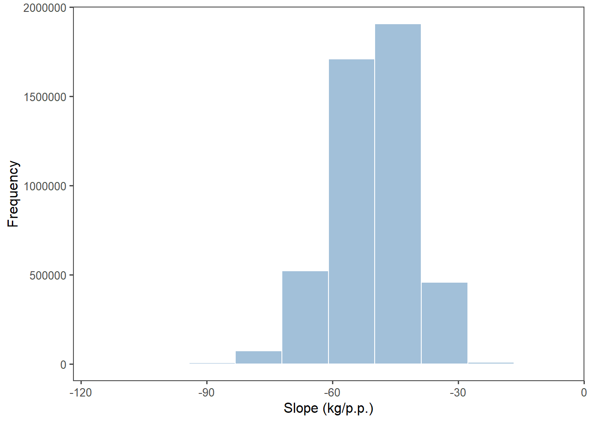
alpha_graphic = big_one_df %>%
filter(C <= 180) %>%
filter(lambda >= 0.4) %>%
filter(lambda <= 0.8) %>%
filter(C >= 60) %>%
ggplot(aes(alfa))+
geom_histogram(color = "white", fill = "black", bins = 10)+
#scale_x_continuous(breaks = c(-2.0,-1.75,-1.50,-1.25,-1.00,-0.75,-0.50,-0.25,0.0), limits = c(-2.0,0.0))+
theme(text = element_text(face = "bold", size = 14),
axis.title = element_text(size = 16, face = "bold"))+
labs(y = "Frequency",
x = "Yield loss (%/p.p.)")+
ggthemes::theme_few()
gc()
alpha_graphic#alpha_res_graphic,alpha_m_sus_graphic,alpha_sus_graphic,
plot_grid(sn_res_graphic,b0_res_graphic,b1_res_graphic, ncol = 3, labels = c("(a)", "(b)", "(c)"),label_x = -0.03)
ggsave("fig/simulated_variables.png", dpi = 1000, bg = "white",
height = 8, width = 12)heat <- big_one_df %>%
filter(C <= 180) %>%
filter(lambda >= 0.4) %>%
filter(lambda <= 0.8) %>%
filter(C >= 15) %>%
group_by(lambda, C) %>%
summarise(n = n(), sumn = sum(profit), prob = sumn / n)
gc() used (Mb) gc trigger (Mb) max used (Mb)
Ncells 2959523 158.1 4708747 251.5 4708747 251.5
Vcells 85481175 652.2 261029279 1991.5 261024076 1991.5heat_graphic = heat %>%
ggplot(aes(as.factor(lambda * 100), as.factor(C), fill = prob)) +
geom_tile(size = 0.5, color = "white") +
scale_fill_viridis_b(option = "D", direction = -1) +
scale_color_manual(values = c("#E60E00", "#55E344")) +
guides(color = guide_legend(override.aes = list(size = 2))) +
labs(x = "Fungicide efficacy (%)",
y = "Fungicide + Application cost ($)",
fill = "Pr(I \u2265 C)",
color = "") +
# facet_wrap(vars(class, class2)) +
ggthemes::theme_few()+
theme(strip.text = element_text(face = "bold", size = 14),
text = element_text(face = "bold", size = 14))
gc() used (Mb) gc trigger (Mb) max used (Mb)
Ncells 2962435 158.3 4708747 251.5 4708747 251.5
Vcells 85486263 652.3 261029279 1991.5 261024076 1991.5big = big_one_df %>%
mutate(class = case_when(sn > 0.25 ~ "High severity",
sn <= 0.25 ~"Low severity"))class <- big %>%
filter(C <= 105) %>%
filter(lambda >= 0.4) %>%
filter(lambda <= 0.8) %>%
filter(C >= 15) %>%
group_by(lambda, C, class) %>%
summarise(n = n(), sumn = sum(profit), prob = sumn / n, .groups = 'drop') %>%
ungroup()
gc() used (Mb) gc trigger (Mb) max used (Mb)
Ncells 2962483 158.3 4708747 251.5 4708747 251.5
Vcells 90167142 688.0 261029279 1991.5 261024076 1991.5library(viridis)
heat_graphic = class %>%
filter(!is.na(class)) %>%
ggplot( aes(as.factor(lambda * 100), as.factor(C), fill = prob)) +
geom_tile(size = 0.5, color = "white") +
#geom_text(aes(label = paste(round(prob, 2), sep = "")),
# size = 4, colour = "white")+
scale_fill_viridis_b(option = "E", direction = -1)+
#scale_fill_viridis(discrete = T, option = "E") +
guides(color = guide_legend(override.aes = list(size = 2))) +
labs(x = "Treatment efficacy (%)",
y = "Treatment cost (USD/ha)",
fill = "Pr(I \u2265 C)",
color = "") +
facet_wrap(vars(class), ncol =1) +
ggthemes::theme_few()+
theme(strip.text = element_text(face = "bold", size = 14),
text = element_text(face = "bold", size = 14),
legend.position = "right")
gc() used (Mb) gc trigger (Mb) max used (Mb)
Ncells 2963942 158.3 4708747 251.5 4708747 251.5
Vcells 90170579 688.0 261029279 1991.5 261024076 1991.5low_class = class %>%
filter(class == "Low severity")
min(low_class$prob)[1] 0.0002628466max(low_class$prob)[1] 0.8714784mean(low_class$prob)[1] 0.3308383low_class %>%
filter(C <= 15)high_class = class %>%
filter(class == "High severity")
min(high_class$prob)[1] 0.3460665max(high_class$prob)[1] 1mean(high_class$prob)[1] 0.9033795overall = big %>%
filter(C <= 105) %>%
filter(C >= 15) %>%
#mutate(sev_class = " Overall") %>%
dplyr::group_by(lambda,class) %>%
summarise(yield_gain_median = median(yield_gain),
yield_gain_mean = mean(yield_gain),
up_95 = quantile(yield_gain, 0.975),
low_95 = quantile(yield_gain, 0.025),
up_75 = quantile(yield_gain, 0.75),
low_75 = quantile(yield_gain, 0.25)) gain_graphic = overall %>%
ggplot(aes(lambda*100,yield_gain_mean))+
geom_line(aes(lambda*100, low_95),
linetype = 2,
size = 1,
fill = NA, color = "black")+
geom_line(aes(lambda*100, up_95),
linetype = 2,
size = 1,
fill = NA,color = "black")+
geom_line(size = 1.4, aes(lambda*100,yield_gain_median), color = "#ffc425")+
#scale_y_continuous(breaks = c(0, 500, 1000, 1500,2000,
# 2500, 3000),
# limits = c(0, 3000))+
#scale_x_continuous(breaks = c(40,50,60,70,80), limits = c(40, 80))+
#scale_color_viridis_d()+
#scale_color_manual(values = c('steelblue', '#9ccb86', 'darkred'))+
ggthemes::theme_few()+
facet_wrap(~class, ncol = 1)+
#facet_wrap(~class+class2)+
labs(x = "Treatment efficacy (%)",
y = "Yield difference (kg/ha)",
color = "Tolerance level",
linetype = "", fill = "")+
theme(text = element_text(face = "bold", size = 14),
strip.text = element_text(size = 14),
legend.position = "top")library(cowplot)
(gain_graphic+heat_graphic) +
plot_annotation(tag_levels = "a", tag_prefix = "(", tag_suffix = ")")&
theme(plot.tag = element_text(face = "bold", size = 16))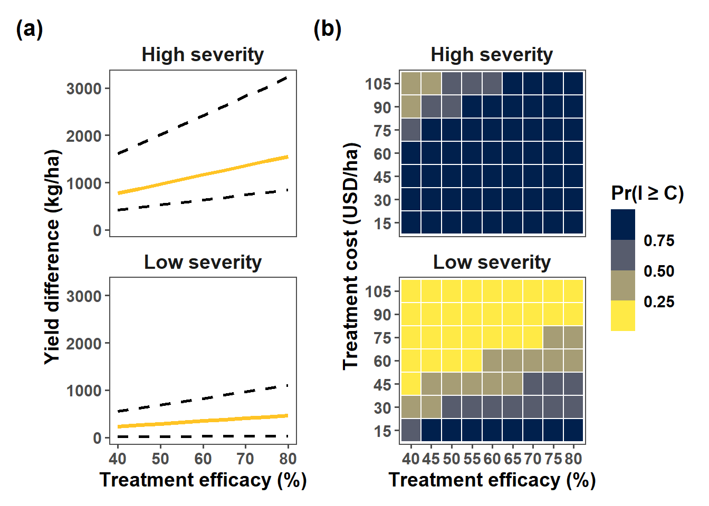
ggsave("fig/break-even_gain.png", dpi = 600, bg = "white",
width = 8, height = 6)